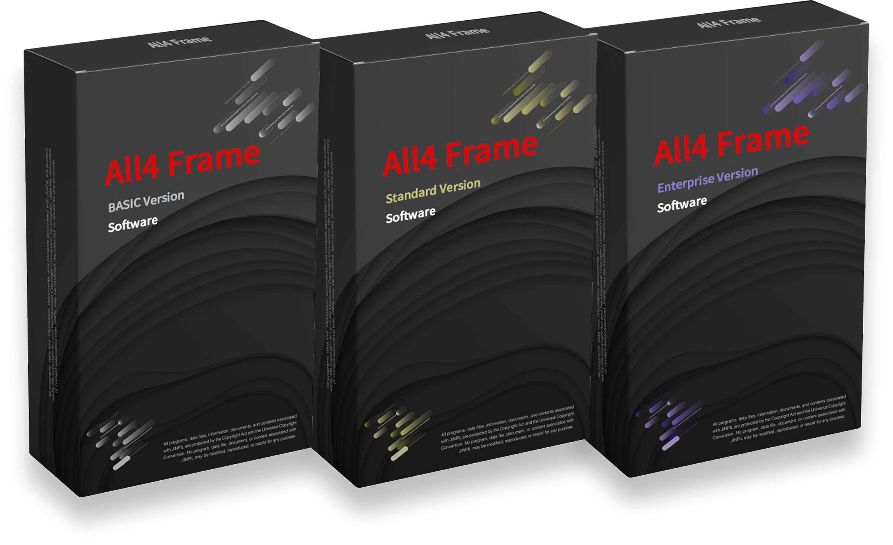
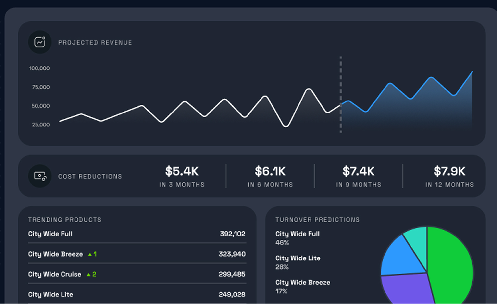
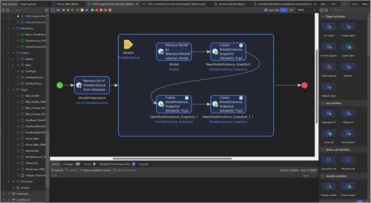

All4Frame 도입으로 단일 개발툴을 사용하여 다양한 Front-End 기술 및 JAVA 기반 Back-End 개발표준을
달성가능 하며,
자사 호환 제품인 All4DevOps 연계 시 All4DevOps 방법론에 의거한 FP, SR 요구사항 구현/테스트/배포
프로세스로 안정적인 서비스 운영 보장
All4Frame 제품 구성
-
All4Frame
Generator GUI
- RestController Generator
- Repository Generator
- DTO Generator
- Widget Generator
-
All4Frame
Web Admin Console
- 권한관리
- 배치서비스 관리
- 온라인 서비스 관리
- 모니터링
-
All4Frame
MSA
- 분산 트렌젝션 관리
- API GW
- BASIC
- Standard
- Enterprise

All4Frame 제품별 제공기능
| Basic | Standard | Enterprise | |
|---|---|---|---|
| 표준 IDE 제공 | |||
| API 문서 자동화 | |||
| Controller, DTO, Repository, Batch 소스코드 자동생성 | |||
| 서버기반 용어관리, 다국어관리 | |||
| 서버기반 개발자 권한제어 | |||
| 서버기반 코드생성 템플릿 관리 | |||
| 배치 스케줄러 / 배치제어/ 배치유량제어 | |||
| 온라인 서비스제어 | |||
| 분산트랙잭션 처리 지원 | |||
| 브라우져 기반 IDE |
RestController Generator
All4Frame IDE RestController Generator Plug-In-

-
-
Step1
Explorer 우 클릭 > All4Frame > Start REST Generator
-
Step2
상단 Quick pick 열림 (Command Pallet)
-
Step3
패키지명 입력> 파일명(물리명) 입력
-
Step4
최종적으로 .rcm 파일 생성된다.
( meta/{패키지} .genSrc/{패키지} )
-
Step1
DTO Generator
All4Frame IDE DTO Generator Plug-In-
-
Step1
Explorer 우 클릭 > All4Frame > Start DTO Generator
-
Step2
상단 Quick pick 열림 (Command Pallet)
-
Step3
패키지명 입력> 파일명(물리명) 입력
-
Step4
최종적으로 .rcm 파일 생성된다.
( meta/{패키지} .genSrc/{패키지} )
-
Step1
-

Repository Generator
All4Frame IDE Repository Generator Plug-In-
- 비지니스 개발 시 Persistence Layer 중 DBMS 와 연결되는 Repository 를 자동생성 한다.
- Repository 에서 사용할 DBMS 접속정보를 Alias 로 저장 가능해야 한다.
- Repository 에서는 지정된 접속정보 Alias 로 DBMS 에 접근 가능해야 한다.
- Repository 에서는 기본 FetchSize 가 지정되어야 하며, 필요 시 개발자 권한에 기반하여 변경 가능 해야 한다.
- Repository 에서는 기본 MaxRow 갯수가 지정되어야 하며, 필요 시 개발자 권한에 기반하여 변경 가능 해야 한다.
- Repository 에서는 단일 테이블 선택시 해당 테이블에 대한 CRUD SQL 메서드를 자동생성 해야 한다.
- Repository 에서는 멀티 테이블 선택시,해당 테이블들에 대한 Relation 을 분석하여 JOIN 된 SQL 을 자동생성 해야 한다.
- Repository 에서는 선택된 테이블(들) 에 대한 전체 갯수 조회 및 페이징 처리를 지원해야 한다.
Security
All4Frame-Security-
-
Step1
Explorer 우 클릭 > All4Frame > Start DTO Generator
-
Step2
상단 Quick pick 열림 (Command Pallet)
-
Step3
패키지명 입력> 파일명(물리명) 입력
-
Step4
최종적으로 .rcm 파일 생성된다.
( meta/{패키지} .genSrc/{패키지} )
-
Step1